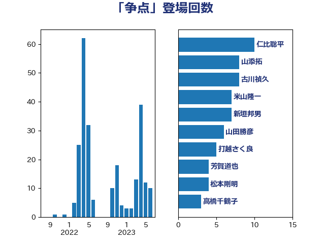

単語「争点」

| 仁比聡平 | 日本共産党 | 10 回 |
| 山添拓 | 日本共産党 | 8 回 |
| 古川禎久 | 自由民主党 | 8 回 |
| 米山隆一 | 立憲民主党 | 7 回 |
| 新垣邦男 | 立憲民主党 | 7 回 |
| 山田勝彦 | 立憲民主党 | 6 回 |
| 打越さく良 | 立憲民主党 | 5 回 |
| 芳賀道也 | 国民民主党 | 4 回 |
| 松本剛明 | 自由民主党 | 4 回 |
| 高橋千鶴子 | 日本共産党 | 3 回 |
| 音喜多駿 | 日本維新の会 | 3 回 |
| 柴田巧 | 日本維新の会 | 3 回 |
| 本村伸子 | 日本共産党 | 3 回 |
| 大石あきこ | れいわ新選組 | 3 回 |
| 古庄玄知 | 自由民主党 | 3 回 |
| 鈴木義弘 | 国民民主党 | 2 回 |
| 足立康史 | 日本維新の会 | 2 回 |
| 西岡秀子 | 国民民主党 | 2 回 |
| 藤巻健太 | 日本維新の会 | 2 回 |
| 田村まみ | 国民民主党 | 2 回 |
| 牧山ひろえ | 立憲民主党 | 2 回 |
| 志位和夫 | 日本共産党 | 2 回 |
| 後藤茂之 | 自由民主党 | 2 回 |
| 平木大作 | 公明党 | 2 回 |
| 守島正 | 日本維新の会 | 2 回 |
| 北側一雄 | 公明党 | 2 回 |
| 前川清成 | 日本維新の会 | 2 回 |
| 井坂信彦 | 立憲民主党 | 2 回 |
| おおつき紅葉 | 立憲民主党 | 2 回 |
| 高良鉄美 | 無所属 | 1 回 |
| 阿部司 | 日本維新の会 | 1 回 |
| 鈴木庸介 | 立憲民主党 | 1 回 |
| 金子恭之 | 自由民主党 | 1 回 |
| 野村哲郎 | 自由民主党 | 1 回 |
| 重徳和彦 | 立憲民主党 | 1 回 |
| 道下大樹 | 立憲民主党 | 1 回 |
| 谷田川元 | 立憲民主党 | 1 回 |
| 西村智奈美 | 立憲民主党 | 1 回 |
| 落合貴之 | 立憲民主党 | 1 回 |
| 茂木敏充 | 自由民主党 | 1 回 |
| 臼井正一 | 自由民主党 | 1 回 |
| 美延映夫 | 日本維新の会 | 1 回 |
| 福島みずほ | 社会民主党 | 1 回 |
| 福山哲郎 | 立憲民主党 | 1 回 |
| 神谷宗幣 | 参政党 | 1 回 |
| 石川大我 | 立憲民主党 | 1 回 |
| 石垣のりこ | 立憲民主党 | 1 回 |
| 田村智子 | 日本共産党 | 1 回 |
| 玉木雄一郎 | 国民民主党 | 1 回 |
| 沢田良 | 日本維新の会 | 1 回 |
| 武井俊輔 | 自由民主党 | 1 回 |
| 櫛渕万里 | れいわ新選組 | 1 回 |
| 梅村聡 | 日本維新の会 | 1 回 |
| 村田享子 | 立憲民主党 | 1 回 |
| 川田龍平 | 立憲民主党 | 1 回 |
| 岸田文雄 | 自由民主党 | 1 回 |
| 岡田直樹 | 自由民主党 | 1 回 |
| 小野泰輔 | 日本維新の会 | 1 回 |
| 小川淳也 | 立憲民主党 | 1 回 |
| 大岡敏孝 | 自由民主党 | 1 回 |
| 大口善徳 | 公明党 | 1 回 |
| 塩村あやか | 立憲民主党 | 1 回 |
| 塩川鉄也 | 日本共産党 | 1 回 |
| 堀場幸子 | 日本維新の会 | 1 回 |
| 堀井巌 | 自由民主党 | 1 回 |
| 坂本祐之輔 | 立憲民主党 | 1 回 |
| 國重徹 | 公明党 | 1 回 |
| 吉田とも代 | 日本維新の会 | 1 回 |
| 古賀千景 | 立憲民主党 | 1 回 |
| 北神圭朗 | 無所属 | 1 回 |
| 前原誠司 | 国民民主党 | 1 回 |
| 三木圭恵 | 日本維新の会 | 1 回 |